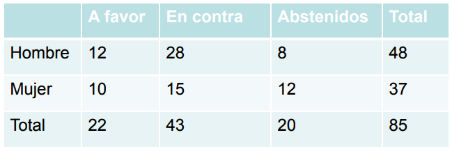
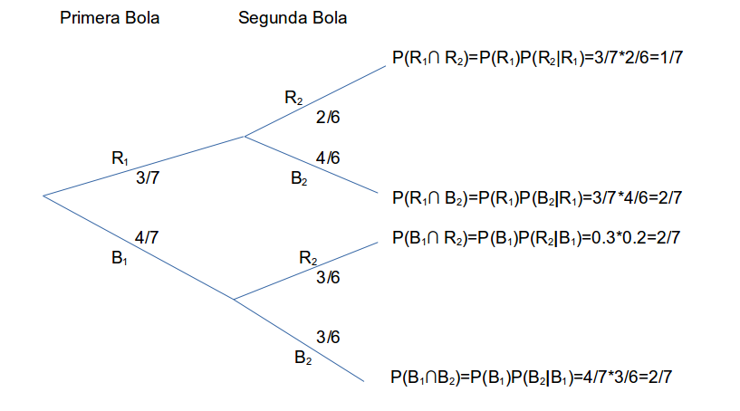

Sean \(A\) y \(B\) dos eventos de un mismo espacio muestral \(S\). La probabilidad condicional de que ocurra \(A\) dado que el evento \(B\) ha ocurrido esta dado por:
\[P(A|B)=\dfrac{P(A\cap B)}{P(B)}=\dfrac{\#(A\cap B)}{\#(B)}\]
Ejemplos:
Ejemplo 1. se lanza un par de dados legales y distinguibles. ¿Cuál es la probabilidad de que solamente uno de los dos dados sea par si se sabe que la suma de los dos es mayor que 8?
Solucion:
Sean los eventos \(A\): “Que solamente uno de los dos dados sea par”" y el evento condicionante \(B\): “Que la suma sea mayor que 8”.
Podemos notar que:
\[\#(A\cap B)=6\] y que, \[\#(B)=10\] Finalmente,
\[P(A|B)=\dfrac{P(A\cap B)}{P(B)}=\dfrac{6}{10}\]
Ejemplor 2: En una ciudad se hizo una encuesta acerca de la opinión de las personas adultas con respecto a una ley del gobierno. La siguiente tabla muestra los resultados de la encuesta clasificados según el sexo del entrevistado.
 Se elige al azar una persona:
Solución: Considerando que las frecuencias relativas estiman a las probabilidades de los eventos, se tiene que:
\[P(F|M)=\dfrac{10}{37}\]
\[P(M|C)=\dfrac{15}{43}\]
\[P(H|F\cup C)=\dfrac{40}{65}\]
Dados los eventos A y B de un mismo espacio muestral, la probabilidad de que ambos ocurran conjuntamente está dado por
\[P(A \cap B)=P(A)P(B|A)\]
Esta expresión se obtiene despejando de la fórmula de probabilidad condicional. Se usa para calcular la probabilidad de que dos eventos ocurran al mismo tiempo.
Ejemplos
Ejemplo 1. Una urna contiene 3 bolas rojas y 4 bolas blancas. Se extraen al azar dos bolas de la urna, una por una y sin reposición. ¿Cuál es la probabilidad de que:
Solución:
La forma más fácil de resolver el problema es haciendo un diagrama de árbol. Luego,
 a)ambas bolas sean rojas?
\[P(R_1\cap R_2)=P(R_1)P(R_2|R_1)=3/7*2/6=1/7\] b) la segunda bola sea roja?
\[P(R_2)=P(R_1\cap R_2) + P(B_1\cap R_2)=3/7*2/6 + 4/7*3/6=18/42=3/7\] c) sólo una de las dos bolas sea roja?
\[P(R_1\cap R_2) + P(B_1\cap R_2)=P(R_1)P(B_2|R1)+P(B_1)P(R_2|B_1)=\] \[3/7*4/6+4/7*3/6=24/42=4/7\] Ejemplo 2. Según la Comisión Electoral de un país, el 90 por ciento de las esposas votan si sus esposos lo hacen, y el 20 por ciento vota si su esposo no lo hace. Además el 70 por ciento de los hombres casados votan. Se elige al azar un matrimonio. ¿Cuál es la probabilidad de que:
Solución:
Sean los eventos \(H\): “Que vote el esposo” y \(W\): “Que vote la esposa”. El problema puede ser representado por un diagrama de árbol. Las probabilidades de color rojo indican que es información que aporta el problema.
\[P(H\cap W)=P(H)P(W|H)=0.7*0.9=0.63\]
\[P(H\cap W^c) + P(H^c \cap W)=\] \[P(H)P(W^c|H) + P(H^c)P(W|H^c)=\] \[0.7*0.1 + 0.30*0.20=0.13\]
\[P(W)=P(H)P(W|H) + P(H^c)P(W|H^c)=\] \[0.7*0.9 + 0.3*0.2=0.69\]
\[P(H \cup W)=P(H) + P(W) - P(H \cap W)=0.70 + 0.69 - 0.63 = 0.76\]
Sean \(B_1,...,B_n\) una colección de eventos que forman una partición sobre el espacio muestral \(S\), es decir \(\bigcup_{i=1}^{n}B_i)\) y \(B_i \cap B_j=\emptyset\) para \(i\neq j\). Sea \(A\) otro evento del espacio muestral \(S\), entonces:
\[P(A)=\sum_{i=1}^{n}P(B_i)P(A | B_i)\] es llamada la formula de la probabilidad total.
La siguiente imagen representa un espacio muestral \(S\) particionado en 5 partes.
Ejemplos
Ejemplo 1: El 70 % de los pacientes con cáncer de pulmón de un hospital son mujeres y el 20 % de ellas son fumadoras. Por otro lado el 40 % de los pacientes con cancer de pulmon hombres son fumadores. Se elige al azar un paciente del hospital. ¿Cuál es la probabilidad de que sea fumador?
Definamos los eventos:
H: El paciente es hombre.
M: El paciente es mujer.
F: El paciente es fumador.
Sabemos que, \(P(H)=0.30\), \(P(M)=0.70\), \(P(F|H)=0.40\) y que \(P(F|M)=0.20\). Por tanto, aplicando la regla de probabilidad total tenemos:
\[P(F)=P(H)P(F|H) + P(M)P(F|M)=0.30*0.40 + 0.70*0.20 = 0.26\]
Por tanto la probabilidad de seleccionar un paciente al azar y que resulte ser fumador es de 0.26.
Ejemplo 2:Una empresa tiene 3 plantas: A, B y C. La planta A produce el 50% de la producción total, B produce el 30% y C el 20%. El 3% de la producción de A es defectuosa, mientras que el 2% de B y el 5% de C también lo son. Se elige al azar un artículo producido por la empresa:
Definamos los siguientes eventos:
A: “Producción en la planta A”, sabemos que \(P(A)=0.50\) B: “Producción en la planta B”, sabemos que \(P(B)=0.30\) C: “Producción en la planta C”, sabemos que \(P(C)=0.20\) D: “La producción es defectuosa”
Según la información que nos da el problema, tenemos \(P(D|A)=0.03\), \(P(D|B)=0.02\) y \(P(D|C)=0.05\)
Vemos que los eventos A, B y C hacen parte de la partición al espacio muestral. Aplicando la regla de probabilidad total tenemos:
\[P(D)=P(A)P(D|A) + P(B)P(D|B) + P(C)P(D|C)=\] \[P(D)=0.5*0.03 + 0.3*0.02 + 0.20*0.05=0.031\]
Tenemos que encontrar \(P(C \cap D)\)
Por definición de probabilidad condicional tenemos,
\[P(C|D)=\dfrac{P(C \cap D)}{P(D)}=\dfrac{0.20*0.05}{0.031}=0.32\]
En la teoría de la probabilidad y las estadísticas, el teorema de Bayes (alternativamente, la ley de Bayes o la regla de Bayes) describe la probabilidad de un evento, sobre la base del conocimiento previo de las condiciones que podrían estar relacionadas con el evento. Por ejemplo, si el cáncer está relacionado con la edad, usando el teorema de Bayes, se puede usar la edad de una persona para evaluar con mayor precisión la probabilidad de tener cáncer, en comparación con la evaluación de la probabilidad de cáncer sin conocer su edad. El teorema de Bayes lleva el nombre en honor al matemático Inglés Thomas Bayes (1701-1761).
El Teorema de Bayes nos dice con qué probabilidad sucede el evento \(A\) dado que el evento \(B\) ha sucedido, y se escribe como \(P(A | B)\). Cuando sabemos con qué frecuencia ocurre \(B\) dado que \(A\) sucede, se escribe \(P(B | A)\), y cuán probable que los eventos \(A\) y \(B\) ocurran por separado.
\[P(B)=\sum_{i=1}^{n}P(A_i)P(B | A_i)\]
Analicemos el siguiente ejemplo:
Cuando P(Fuego) significa con qué frecuencia hay fuego, y P(Humo) significa la frecuencia con que vemos humo, entonces:
P(Fuego | Humo) significa con qué frecuencia hay fuego cuando vemos humo. P(Humo | Fuego) significa la frecuencia con la que vemos humo cuando hay un incendio.
Entonces, la fórmula nos dice “como ir haca adelante” cuando sabemos lo que ha ocurrido (o viceversa)
Ejemplos
Si los incendios peligrosos son poco frecuentes (1%) pero el humo es bastante común (10%) debido a las fábricas, y el 90% de los incendios peligrosos producen humo, entonces:
\[P(Fuego | Humo) = \dfrac{P(Fuego)*P(Humo | Fuego)}{P(Humo)}=\dfrac{0.01*0.9}{0.10}=0.09\] Entonces encontramos que el 9 % de las veces que vemos humo, este proviene de un incendio peligroso. En otras palabras el 9% de las veces se espera que el humo signifique un incendio peligroso
Ejemplos
Ejemplo 1: Suponga que los chips de un circuito integrado son probados con cierto instrumento y la probabilidad de que se detecten los defectuosos es .99. Por otro lado hay una probabilidad de .05 de que un chip sea declarado como defectuoso cuando en realidad es bueno. Si el 1 % de todos los chips son defectuosos. ¿Cuál es la probabilidad de que un chip que es declarado como defectuoso sea en realidad bueno?
Resolver este tipo de problemas puede ser confuso, pero la estrategia para no moriri en el intento es declarar adecuadamente los eventos que intervienen en el problema, veamos:
D: “El chip es defectuoso”, con P(D)=0.01 (un 1 %).
B: “El chip es bueno”, con P(B)=1-P(D)=1-0.01=0.99 (El complemento de que sea defectuoso)
M: “El chip es declarado como defectuoso” (P(M), Esta probabilidad es desconocida)
Del problema tenemos que P(M|D)=0.99 y que P(M|B)=0.05
¿Que nos esta pidiendo el problema?, es simple, debemos calcular P(B|M).
Aplicando el Teorema de Bayes,
\[P(B|M)=\dfrac{P(B)P(M|B)}{P(M)}\] La probabilidad total para P(M) es
\[P(M)=P(B)P(M|B) + P(D)P(M|D)=0.99*0.05 + 0.01*0.99=0.0495 + 0.0099 = 0.0594\]
Finalmente,
\[P(B|M)=\dfrac{P(B)P(M|B)}{P(M)}=\dfrac{0.99*0.05}{0.0594}=0.8333\]
Es decir, la probabilidad de encontrar un chip que en realidad es bueno y declararlo como defectuos es de 0.8333. (MUY ALTA!)
Dos eventos A y B del mismo espacio muestral S son independientes, si la probabilidad de que ocurra uno no afecta la probabilidad de que el otro ocurra. Lo anterior matemáticamente significa que
A y B son independientes si:
\[P(A|B)=P(A)\] o \[P(B|A)=P(B)\]
Una definición equivalente para eventos independientes es:
Los eventos A y B son independientes si,
\[P(A \cap B)= P(A)P(B)\]
Ejemplos
Ejemplo 1:Se lanzan un par de dados legales y distinguibles y se definen los siguientes eventos:
A: “Que el primer dado sea par.”
B: “Que el segundo dado sea mayor que 4.”
¿Son los eventos A y B independientes?
Tenemos que,
\[P(A)=18/36 \quad P(B)=12/36\] también tenemos que \[P(A \cap B)=6/36\]
¿Cómo vefificamos que A y B son independientes?, solo debemos el producto de sus probabilidades es igual a la probabilidad de la intersección. Veamos
\[P(A)P(B)=18/36*12/36=6/36\] Finalmente podemos decir que A y B son eventos independientes!
Nota: Un error muy común es considerar que los eventos son independientes si son mutuamente excluyentes: observe que esto no es cierto. Por ejemplo, si se lanza una moneda legal una vez y se consideran los eventos
A: “El resultado obtenido es cara”.
B: “En resultado obtenido es cruz”
Entonces es evidente que los eventos A y B son mutuamente excluyentes. Sin embargo NO son independientes, pues
\[P(A \cap B)=0\] y \[P(A)(B)=1/2*1/2=1/4\] Así vemos que \(0 \neq 1/4\), por tanto A y B no son independientes.
Ejemplo 2: Un aprendiz para francotirador está practicando en un polígono de tiro y debe presentar una prueba que consta en hacer dos disparos. Según su entrenamiento y basado en resultados anteriores él ha encontrado que la probabilidad de que acierte en el blanco es 0.8, independientemente del disparo que haga. ¿Cuál es la probabilidad de que el aprendiz:
Definimos los eventos para cada disparo como:
A: “Acertar en el disparo uno”
B: “Acertar en el disparo dos”
Aquí simplemente, como cada disparo es independiente del anterior, tenemos
\[P(A \cap B)=P(A)P(B)=0.8*0.8=0.64\] La probabilidad de acertar en ambos intentos es 0.64.
Debemos tener encuenta los complementos,
\[P(A \cap B^c) + P(A^c \cap B)=P(A)P(B^c) + P(A^c)P(B)=0.8*0.2 + 0.2*0.8=0.16 + 0.16 = 0.32\]
\[P(A \cup B)=P(A)+P(B)-P(A \cap B)=0.8 + 0.8 - 0.64= 0.96\]
Como \(A^c\) y \(B^c\) son independientes, tenemos que,
\[P(A^c \cap B^c)=P(A^c)P(B^c)=0.2*0.2=0.04\]
La probabilidad de que no de en el blanco en ningún disparo es bien baja, 0.04.